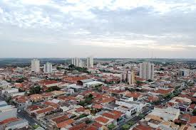
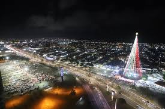
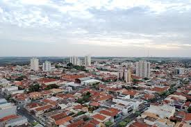
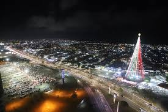

Bem-vindo a este trabalho sobre a Cidade de Mirassol
Este trabalho foi realizado pelos alunos: Adriano Jorge Borges, Matheus Amorim Pereira, Ryan Vieira Dias, Samuel Victor de Oliveira Medina e Victor Alexandre de Souza
Abaixo temos como Mirassol é hoje
 


